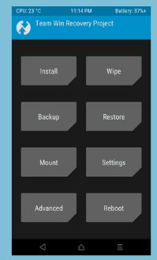

ROOT WITH MAGISK
Developed by topjohnwu, Magisk is a tool that can help you root your Android device with ease. It is a Systemless root method that modifies the Android system without actually modifying it. In layman’s terms, it is a clever way to fool Google’s SafetyNet.
CAUTION:
What you’re going to read ahead should be tried at your own risk. We are not responsible for any harm caused to your device. Proceed only if you’re willing to take the risk.
WARNING:
Rooting a device may void the warranty on the device. It may also make the device unstable or if not done properly, may completely brick the device. Some methods may install additional apps/software on your device. We does not take any responsibility for your device. Root at your own risk and only if you understand what you are doing!
We’ll be using TWRP in this guide:
DOWNLOAD MAGISK
tap image to enlarge
Assuming your phone has a custom recovery, the first thing you’ll need is the Magisk zip file. This is the file we will be flashing in the next step. You can find the latest version of the zip at the official Magisk Github. Download the latest zip and transfer it to your phone/tablet, or download it directly on your phone/tablet. An easy way to do this is to install the Magisk Manager app (found in Step 3), which will prompt you to download the latest zip that’s currently available.
In case your device lacks a custom recovery, you can either:
- Manually patch your device’s boot image and flash it, or
- Use the Direct Install option
FLASH MAGISK
tap image to enlarge
Next, we will go into recovery mode and flash the zip. Find out how to boot into recovery mode on your device with this guide. It will usually be some combination of the power button and volume keys. Once you boot into your custom recovery, follow these steps:
- In recovery mode, select the Install button.
- Find the folder where you download the zip file.
- Select the zip file
- Swipe the slider to install Magisk
- Tap Reboot System
INSTALL MAGISK MANAGER APP
(skip if your using Magisk v22+)
tap image to enlarge
The Magisk framework is now installed on your device. To manage it, you’ll need the aptly named Magisk Manager. This is what will allow you to install modules. Download the latest Magisk Manager APK here and make sure you have “Unknown sources” enabled in the Settings. Install the app and open it up.
The Manager app allows you to adjust root settings and also install modules, which are installable mods. The app doubles as a repository for a bunch of great modules that can easily extend the functionality of your device. Using the Manager app is an important part of getting the most out of this root method.
VERIFY

tap image to enlarge
This step is to verify that everything is working properly. Open the newly installed Manager app. We want to see a bunch of green check marks in the app. This means you have successfully obtained root.
Next, we want to make sure your device still passes Google’s SafetyNet check. SafetyNet blocks apps like Pokémon GO from working when the system has been modified. Magisk works around this by leaving the system untouched. Select the “Tap to start SafetyNet Check” button. If you see two green checkmarks appear under the button, your device has passed the check. Google will occasionally break this with new Android Security Patch updates, but the Magisk developer will release fixes when that happens. In case, you are on a Custom ROM, your maintainer must work to fix the issues with SafetyNet when they occur. You must also notice the fact that SafetyNet can get broken if you modify your device’s system partition.
HIDE ROOT FROM POKÉMON GO
tap image to enlarge
Ever since the introduction of Google's SafetyNet feature, it's been an ongoing battle with apps trying to detect root access. For a while, there was a lot of back and forth between Magisk and certain apps. Pokémon GO was a high profile example of an app aggressively checking for anything related to root. Luckily, Magisk has made great strides to keep apps from detecting root for good. Just follow this guide to completely hide root from apps in your device like Pokémon GO.
HELP!
If you’re having issues with the installation process, head on over to the official Magisk forum at XDA. You’ll find plenty of other people with the same device and problems. The developer is also available in the XDA forum. He’s constantly updating to work around SafetNet and to make sure this method works as best as possible.